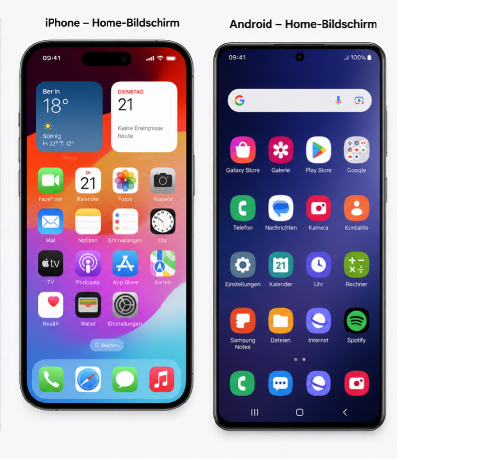
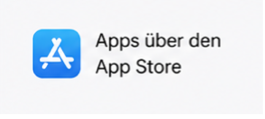
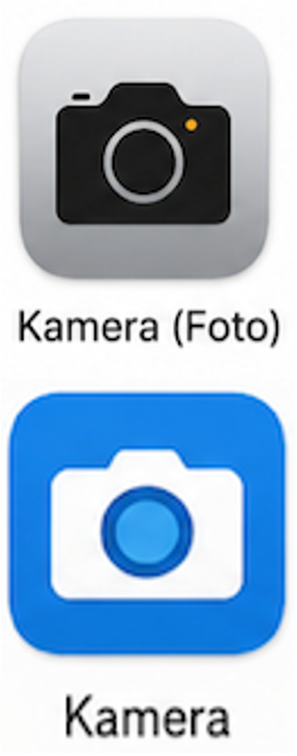
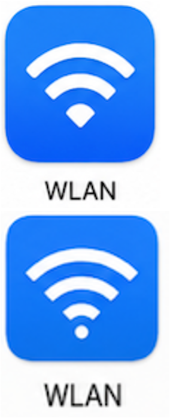
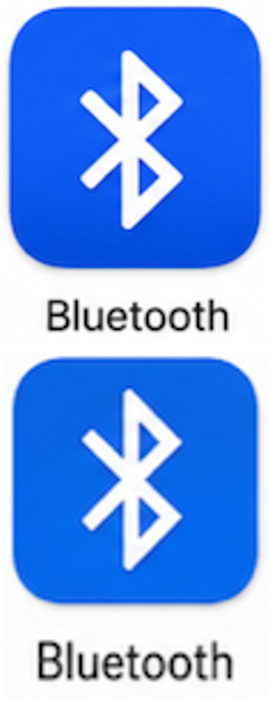
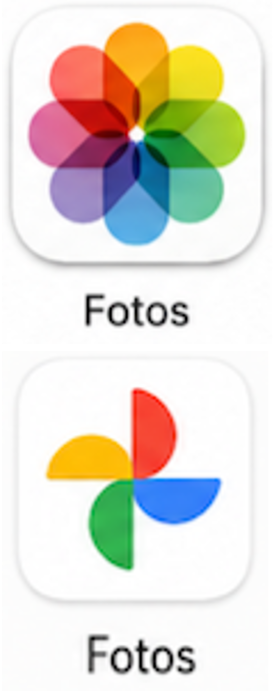
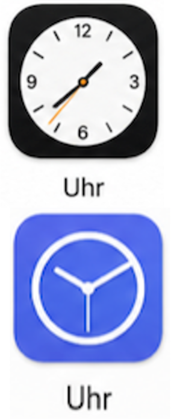
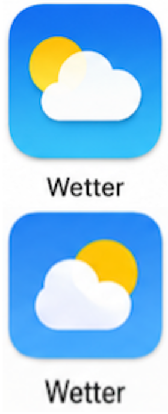

-
Grundlagen des Smartphones
In dieser Lerneinheit lernen Sie die wichtigsten Grundlagen rund um die Bedienung eines Smartphones oder Tablets. Sie sehen kurze Videos und erfahren Schritt für Schritt, wie man ein Gerät sicher benutzt – von einfachen Fingerbewegungen bis hin zu ersten Apps. Am Ende können Sie Ihr Wissen in einer kleinen Übung anwenden.
-
Betriebssytem des Smartphones
Im nächsten Abschnitt erfahren Sie noch mehr über Ihr Gerät. Wir schauen uns an, welche unterschiedlichen Betriebssysteme es gibt und was das für die Nutzung bedeutet.
Jetzt wissen Sie, dass es verschiedene Betriebssysteme gibt. Im nächsten Schritt lernen Sie, was „Apps“ sind und wie sie funktionieren. Außerdem stellen wir Ihnen einige wichtige Apps kurz vor.
-
Was ist eine App?
Eine App (wird Äps ausgesprochen) ist ein kleines Programm auf einem Smartphone oder Tablet. Das Wort „App“ kommt vom englischen Wort „Application“, also „Anwendung“. So sehen Apps auf Ihrem Bildschirm aus:

Man kann sich eine App wie ein Werkzeug in einem Werkzeugkasten vorstellen:
- Die Telefon-App dient zum Telefonieren
- Die Kamera-App macht Fotos
- Die WhatsApp-App verschickt Nachrichten
- Eine Wetter-App zeigt das Wetter an
- Eine Bank-App ermöglicht Bankgeschäfte
Jede App hat eine bestimmte Aufgabe.
-
Woher bekommen Sie die Apps?
Apps werden normalerweise aus offiziellen App-Stores heruntergeladen:
- Auf iPhones aus dem Apple App Store

- Auf Android-Geräten aus dem Google Play Store
Dort können Apps herunterladen, aktualisiert oder gelöscht werden.
-
Was sollte man über Apps wissen?
Nicht jede App ist kostenlos
Manche Apps sind kostenlos, andere kosten Geld. Einige kostenlose Apps bieten zusätzliche kostenpflichtige Funktionen an.
Nur notwendige Apps installieren
Bitte laden Sei nur notwendige Apps herunter, da sie auch Speicherplatz benötigen.
-

Kamera
Mit der Kamera-App können Sie ganz einfach Fotos und Videos aufnehmen. So lassen sich schöne Momente mit Familie, Freunden oder auf Reisen festhalten. Die aufgenommenen Bilder werden automatisch auf dem Smartphone gespeichert und können später angesehen oder mit anderen geteilt werden.
-
Telefon
Mit der Telefon-App können Sie andere Menschen anrufen und Anrufe entgegennehmen. Sie können Telefonnummern direkt eingeben oder gespeicherte Kontakte auswählen. So bleiben Sie einfach und schnell mit Familie, Freunden oder wichtigen Einrichtungen in Verbindung.
-

WLAN
WLAN verbindet Ihr Smartphone oder Tablet kabellos mit dem Internet. Dadurch können Sie Nachrichten senden, im Internet surfen, Videos ansehen oder Apps nutzen, ohne mobile Daten zu verbrauchen. Zu Hause verbindet sich das Gerät meist automatisch mit dem bekannten WLAN-Netzwerk. Wenn kein WLAN verfügbar ist, kann das Smartphone über mobile Daten auf das Internet zugreifen. Die Verbindung erfolgt über das Mobilfunknetz Ihres Anbieters. Dabei können je nach Tarif Daten verbraucht werden, weshalb man auf das verfügbare Datenvolumen achten sollte.
-

Bluetooth
Bluetooth ist eine Funkverbindung für kurze Entfernungen zwischen Geräten. Damit können Sie zum Beispiel kabellose Kopfhörer, Lautsprecher, Hörgeräte oder das Autoradio mit Ihrem Smartphone verbinden. Nach der einmaligen Einrichtung verbinden sich viele Geräte später automatisch miteinander.
-

Fotos
In der Fotos-App werden alle aufgenommenen Bilder und Videos gespeichert. Dort können Sie Ihre Erinnerungen ansehen, sortieren, vergrößern oder wieder löschen. Außerdem können Sie Fotos ganz einfach mit Familie und Freunden teilen, zum Beispiel per WhatsApp oder E-Mail.
-

Uhr
Mit der Uhr-App können Sie die aktuelle Uhrzeit und das Datum sehen. Außerdem können Sie einen Wecker stellen, einen Timer nutzen oder eine Stoppuhr verwenden. So hilft die Uhr-App dabei, Termine einzuhalten und an wichtige Zeiten erinnert zu werden.
-

Wetter
Die Wetter-App zeigt einfach und übersichtlich das aktuelle Wetter sowie die Vorhersage für die nächsten Tage an. Große Symbole und klare Texte helfen, Temperatur, Regen oder Sonne schnell zu erkennen. So wissen Seniorinnen und Senioren jederzeit, ob sie zum Beispiel eine Jacke oder einen Regenschirm brauchen.